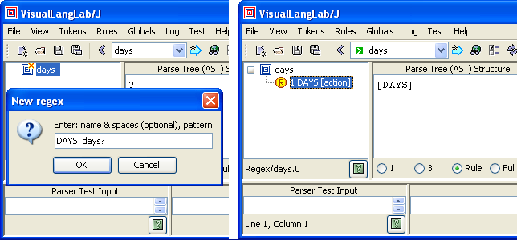
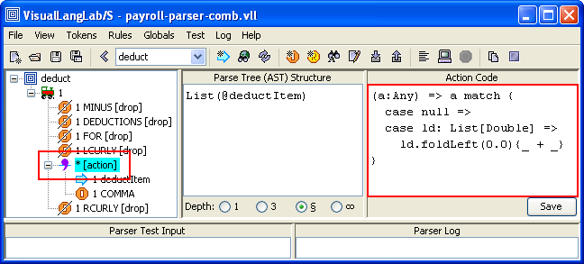
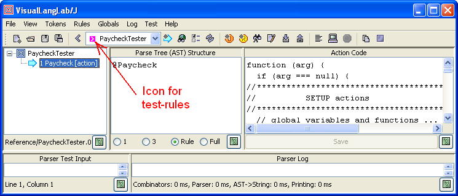

VisualLangLab is a visual parser-generator IDE for developing parsers without code or scripts of any kind. Parser-rules are depicted as visual grammar-trees with intuitive icons for different nodes types. The following figures show how it represents some rules of the payroll-parser external DSL described on page 240 of Programming Scala. The same code can also be found online at Generating Paychecks with the External DSL.
| amount | days | deductItems | deductKind |
|---|---|---|---|
|
|
|
|
The grammar-trees are executable, and can be run at any time at the click of a button. No other skills or tools are needed. This simplifies testing, promotes an iterative-incremental development process, and speeds up development manyfold.
The grammar is saved as a XML file that can be reloaded for further editing and testing. An API enables client programs (Scala or Java) to load the XML file and regenerate the parser.
Each grammar-tree is a parser. There is no generated-code or other underlying code representation. VisualLangLab uses Scala's parser combinator functions to turn each grammar-tree directly into a Parser at run-time as needed. Parser generation is therefore much faster than a code-based approach.
In this tutorial we recreate the payroll DSL using VisualLangLab, highlighting its features for parser development and testing.
def ... : Parser[...] = ...
is a parser rule. Parser-rule and grammar-tree are generally synonymous terms.To run VisualLangLab, just download VLLS-All.jar and double-click it in a file-browser. Linux and UNIX users will have to enable execution (chmod +x ...) first. Another file, VLLS.zip, which contains the documentation files, sample grammars, etc. should also be downloaded.
When started, VisualLangLab displays the GUI shown in Figure-2 below. The menus and buttons are explained as needed, but a full description can also be found at The GUI. All toolbar buttons have tool-tip texts that explain their use.

Figure-?. The VisualLangLab GUI
The graphical and text panels are used as described below.
The only prerequisite for running VisualLangLab as described above is a 6.0+ JRE. But if you want to use the VisualLangLab API to develop standalone applications, a 2.9.0+ Scala installation is required.
In the book, the parser code is organized in top-down fashion. We start at the bottom, with doubleNumber, and work our way up, creating some of the parser-rules so as to demonstrate most of VisualLangLab's features. The complete parser is, however, included as the file payroll-parser-comb.vll in the grammars directory of the zip distribution.
Your first step is to import the tokens in JavaTokenParsers, and VisualLangLab
provides a corresponding token library containing these tokens.
Select Tokens -> Import tokens from the main menu, or click the Import tokens
( ) button, and choose the file
grammars/TL-JavaTokenParsers.vll from the contents of VLLS.zip.
) button, and choose the file
grammars/TL-JavaTokenParsers.vll from the contents of VLLS.zip.
Also note that because of differences between Scala's RegexParsers
and VisualLangLab's internal lexer, we shall be substituting the
token decimalNumber wherever floatingPointNumber was used
in the original code.
This is a very simple parser-rule, and matches just one unconditional token. But as mentioned above, we will modify this parser definition, and implement it as the following line instead.
def doubleNumber = decimalNumber
To create the new rule click the New rule button
( ),
and enter doubleNumber into the dialog box presented as in Figure-? below.
Clicking the dialog's OK button creates a new rule with just the
Root node (
),
and enter doubleNumber into the dialog box presented as in Figure-? below.
Clicking the dialog's OK button creates a new rule with just the
Root node ( ).
).

Figure-?. Creating the doubleNumber parser-rule
Now right-click the Root node, and select Add -> Token from the popup context-menu. Another dialog with all the known token names is presented as in Figure-? below. Select decimalNumber and click the OK button

Figure-?. Selecting the decimalNumber token
Finally, select (click) the decimalNumber token
( ), and paste the Scala function
given below into the text area under Action Code as in Figure-?
below. Click the Save button.
), and paste the Scala function
given below into the text area under Action Code as in Figure-?
below. Click the Save button.
(a: Any) => a match {
case null =>
case d: String => d.toDouble
}The action-code function is explained further in Action Code below. Your finished parser should look like the Figure-? below.

Figure-?. Adding action-code to the doubleNumber rule
This parser-rule uses to custom literal tokens (is and are) which must be defined first. Proceed as follows.
 icon),
enter IS,is into the dialog presented, and click the OK button
(as in Figure-? below)
icon),
enter IS,is into the dialog presented, and click the OK button
(as in Figure-? below)The information entered into the dialog when creating a literal contains the literal's name, and its pattern separated by a comma. You can optionally add spaces around the comma for clarity if required. The name is used to refer to the literal in rules (as shown below), while the pattern is it's literal definition.

Figure-?. Creating the is and are tokens
This parser uses a Choice
(the  icon) as its top-level node.
A Choice node is a parent of a group of alternatives (any one of which may occur
in the input). To create the parser, perform the following steps.
icon) as its top-level node.
A Choice node is a parent of a group of alternatives (any one of which may occur
in the input). To create the parser, perform the following steps.
),
enter toBe into the dialog presented, and click its OK button) and select
Choice from the context menu. A Choice node
() is added to the root node
(as in the left and middle parts of Figure-? below)Your toBe parser should now look like the one on the right side of Figure-? below.

Figure-?. The toBe parser
The grammar-tree's node icons are designed to be intuitive, but you can find a guide to all the icons in Grammar Tree Icons and Annotations
This parser uses a Sequence
(the  icon) as its top-level node.
A Sequence node is a parent of a set of nodes which occur
in the input in the order specified. To create this parser, perform the following steps.
icon) as its top-level node.
A Sequence node is a parent of a set of nodes which occur
in the input in the order specified. To create this parser, perform the following steps.
),
enter percentage into the dialog presented, and click its OK button) and select
Sequence from the context menu. A Sequence node
() is added to the root node
Examining the arrows (~> and <~) in the definition,
we can deduce that only the result of matching doubleNumber is desired to
be retained. All other tokens are to be dropped from the AST. You can drop
tokens from the sequence's AST by right-clicking each node's icon and selecting
drop from the context menu (as shown on the left side of the figure).
Remember not to drop the doubleNumber token.
Your finished parser-rule should now look like the left side of Figure-? below.

Figure-?. The percentage parser-rule
Observe that the icons of dropped nodes are overlaid with a black line from the lower-left to the upper-right. The annotation drop is also added after the name of the node.
Select (click) the Sequence icon
(), and paste the Javascript function
given below into the text area under Action Code (red rectangle on right side).
Then click the Save button.
function (arg) {
if (arg !== null) {
return VLL.grossAmount * (arg / 100);
}
}Though different from the original text, this action function is actually functionally equivalent, as explained in Action Code below. Your finished parser should look like the one on the right side of Figure-? above.
This parser-rule uses a custom regex tokens (days?) which must be defined first. Proceed as follows.
 icon),
enter DAYS,days? into the dialog presented, and click the OK button
(as in Figure-? below). In this case, the pattern is a regular-expression as
defined by the JDK's
Pattern
class),
enter days into the dialog presented, and click its OK button)
and select Add -> Token from the context menu.
Select DAYS from the dropdown list, and click the OK button
icon),
enter DAYS,days? into the dialog presented, and click the OK button
(as in Figure-? below). In this case, the pattern is a regular-expression as
defined by the JDK's
Pattern
class),
enter days into the dialog presented, and click its OK button)
and select Add -> Token from the context menu.
Select DAYS from the dropdown list, and click the OK buttonThe information entered into the dialog contains the regex's name, and its pattern separated by a comma. As for literals, you can optionally add spaces around the comma for clarity. The name is used to refer to the literal in rules (as shown below), while the pattern is it's .

Figure-?. Creating the is and are tokens
This parser uses a Choice
(the icon) as its top-level node.
A Choice node is a parent of a group of alternatives (any one of which may occur
in the input). To create the parser, perform the following steps.
) and select
Choice from the context menu. A Choice node
() is added to the root node
(as in the left and middle parts of Figure-? below)
Select (click) the DAYS icon
(), and paste the Scala function
given below into the text area under Action Code (red rectangle on right side).
Then click the Save button.
(a: Any) => a match {
case null =>
case _ => 1
}Action-code function design and use is explained in Action Code below. Your finished parser should look like the one on the right side of Figure-? above.
A full section on testing comes later, this section demonstrates the simplicity and power of VisualLangLab's manual testing facilities. It shows how you can effortlessly validate every little addition or change without using or learning any other skills or tools.
To manually test doubleNumber proceed as follows (refer Figure-? below).
If you do not see any red text (as in Figure-? below) in the Parser Log area, your parser executed without run-time errors. But that alone is not enough, you should verify that the result returned (for example, 25.5 in Figure-?) is the value expected.

Figure-?. Testing the doubleNumber parser
The parser's result or AST is on the third line (after the result follows:). The previous two lines of output contain performance information that should be ignored. This test passes as 25 (last line under Parser Log) is the expected result.
Before you start to enter test data for toBe take a moment to understand
the structure of its output. All parser rules return an
abstract syntax tree (or AST)
whose structure depends on the arrangement and properties of the grammar-tree's constituent nodes
as explained in AST Structure.
The text area under Parse Tree (AST) Structure displays the expected AST
structure of the selected grammar-tree node. Figure-? below tells you that the returned
result is one of two scala.Pair objects (depending on what was found in the input).

Figure-?. The AST of the toBe parser rule
Figure-? below shows the result of exercising toBe with three different inputs: is, are, and other.
 |
 |
 |
| Figure-?. Validating toBe with different inputs |
This set of tests too pass as all three test cases produce the expected result.
The remaining parsers, except one that uses a repsep and
is described fully below, present no new difficulties and
we leave them as an exercise for the reader.
To save time, you may also just open the file payroll-parser-comb.vll
in the grammars directory of the zip distribution.
This parser-rule uses a RepSep
(the  icon) as its top-level node.
To create this rule proceed as follows.
icon) as its top-level node.
To create this rule proceed as follows.
),
enter deductItems into the dialog presented, and click its OK button) and select
RepSep from the context menu (as on the left side of Figure-? below).
A RepSep node
() is added to the root nodeYour finished rule should look like the one on the right side of Figure-? below.

Figure-?. The deductItems parser-rule
If you did create deductItems you will notice a little red 'x' at the top-right corner of the rule's root node. This is the error flag, and making the mouse hover over the root-node displays the nature of the problem (in the tool-tip text). Both these features can be seen on the right side of Figure-? above.
The problem is that deductItems can return successfully without matching any input. But VisualLangLab forbids the use of such parser-rules as it is possible to create very obscure and difficult-to-diagnose errors with them. The solution, in this case, is quite simple — implant the contents of deductItems directly into it's client rule (deduct). Figure-? below shows the required modification of deduct.
Figure-?. Modifying the deduct rule
In terms of the to the original parser combinator code, we made the following change.
def deduct = "minus" ~> "deductions" ~> "for" ~>
"{" ~> deductItems repsep(deductItem, "," ) <~ "}"
def deductItems = repsep(deductItem, "," )
Finally, select (click) the RepSep node
(), and paste the Scala function
given below into the text area under Action Code as in Figure-? below.
Click the Save button.
(a:Any) => a match {
case null =>
case ld: List[Double] => ld.foldLeft(0.0){_ + _}
}The action-code function is explained further in Action Code below. Your finished parser should look like the Figure-? below.

Figure-?. Adding action-code to the deductItems rule
Remember that the grammar-trees are parser-rules. There is no generated-code or intermediate-code. VisualLangLab uses Scala's parser combinator functions to turn the grammar-tree directly into a Parser at run-time without compiling any code. That is why the displayed parser-rule runs almost immediately when the Parse input button is clicked.
When you finish developing and testing a parser (or when work must be suspended temorarily) the parser can be saved to a file by invoking File -> Save from the main menu. The saved grammar file has a .vll extension, and contains only an XML representation of all the data entered into the GUI (but no other data, code or serialized Scala objects). A saved grammar can be opened again later for review, testing, or further modification by invoking File -> Open from the main menu.
Action code is written as anonymous funtion literals in Scala or Javascript. Both languages can be used freely for different parser-rules. The choice of language here is based on one criterion: use of non-local references. Functions with no non-local references are coded in Scala, while those with non-local data or function references are coded in Javascript. You can find detailed guidelines at Action-Code Design.
A few examples of action-code functions in Scala and Javascript are shown below. Observe that grammar-tree nodes with associated action-code have the action attribute marked next to the node's icon. To see the action-code you have to select (click) the specific node.
Because action-code functions execute in a closed environment, it is difficult to load and use custom classes (like Paycheck, Money, etc.). This is where Javascript's dynamic features help. As shown in Wrapper With Actions below, those features can be used to create Javascript objects and methods to substitute the missing native (Scala or Java) resources. This approach is frequently adequate in a limited context such as testing. More exacting situations that must load external classes must be handled via the API.
The purpose of this rule is to check its input, and return the integer 5 if either weeks or week is found, and the integer 1 if days or day is found. As described in Action Code below, action-code functions must handle two cases: a null argument, and a non-null real AST argument. For this grammar, only the function in Wrapper with Actions below needs to handle the null-argument case.
To understand the logic of the action-code you must know the structure of the AST passed in (as the argument a). The AST structure is depicted in the text area under the Parse Tree (AST) Structure label. AST Structure describes AST structuring principles in general.

Figure-?. A Scala action-code function
The structure and action-code of the two subordinate rules it uses (weeks and days) is shown in Figure-? below.
 |
Since weekDays' subordinate rules return the required values (5 and 1),
its own action-code only needs to pass on the value recieved. Based on the
above details we know that the AST passed in to weekDays is one of
these two values: Pair(0,5), and Pair(0,1) (the
second member being the value from the subordinate rules).
So weekDays merely needs to return the second member of the Pair.
Figure-? below illustrates the action-code associated with the rule percentage.
This function uses a non-local reference VLL.grossAmount.
As described in Action-Code Design,
the symbol VLL refers to a common global object available to all action-code
functions, and should be used as a repository for all parser-specific features (methods and
functions) and state (data). Wrapper With Actions below
illustrates how VLL is equipped with required features before
testing begins.

Figure-?. A Javascript action-code function
The function does not have any setting-up role, so does not have to handle the
(arg == null) case. The value of arg it receives is the
output from the rule doubleNumber (see AST structure) which is a
double value. It computes and returns the required value.
Testing is much simpler in VisualLangLab than in almost every other tool. Ad Hoc Testing - A Short Detour showed how effective ad hoc manual testing can be in certain situations. VisualLangLab also supports automated testing, and the following sections describe two different approaches for different situations.
This approach uses an additional parser-rule to wrap the main (or top-level) parser-rule with before and after scripts. The before script sets up initial conditions before the main parser-rule is invoked, and the after script validates the parse-tree returned by the main parser-rule. Figure-? below shows details of the wrapper rule used for testing. To display the before and after scripts (actually parts of a single action-code function) you must select (click on) the Reference node that points to the Paycheck parser-rule.
If you have not read Action-Code Design and AST Structure, please do so now!

Figure-?. Wrapper rule for automated testing
The Javascript function with the before and after scripts is reproduced below for clarity. The setup part of the function performs two functions.
grossSalary, and creates the
method salaryForDays in the global object VLLThe test part of the code checks the structure of the parse-tree returned by the main parser, and prints out an appropriate message.
function (arg) {
if (arg === null) {
//****************************************
// SETUP actions
//****************************************
// global variables and functions ...
VLL.grossSalary = 500.0
VLL.salaryForDays = function (days) {
return VLL.grossSalary * days;
}
// Input text for parser ...
ParserTestInput.setText(
"paycheck for employee \"Buck Trends\"\n" +
"is salary for 2 weeks minus deductions for {\n" +
" federal income tax is 25. percent of gross,\n" +
" state income tax is 5. percent of gross,\n" +
" insurance premiums are 500. in gross currency,\n" +
" retirement fund contributions are 10. percent of gross\n" +
"}"
)
} else {
//****************************************
// TEST actions
//****************************************
if (arg.length === 3) {
var error = ""
var empl = arg[0];
if (empl !== "Buck Trends") {
error += "BAD empl, "
}
var gross = arg[1];
if (gross !== 5000) {
error += "BAD gross, "
}
var deduct = arg[2];
if (deduct !== 2500) {
error += "BAD deduct"
}
if (error === "") {
return "OK";
} else {
return error;
}
} else {
return "BAD AST structure";
}
}
}
To understand how this works, let's run it a few times with and
without changes to the test input. The underlined part is the
changed text (in the table). To run the test after making changes
in the action-code click the Save button and wait for
a pop-up dialog to confirm that the change was accepted, click
the pop-up's OK button, and then click the Parse input
( ) button.
) button.
| Input Changes | Result |
|---|---|
| No changes | OK |
| ... employee "Duck Trends" ... | BAD empl, |
| ... salary for 22 weeks minus ... | BAD gross, BAD deduct, |
| ... premiums are 900. in ... | BAD deduct |
Near the top of the script, a value called ParserTestInput is
used. This name is a reference to the GUI's JTextArea
from which the parser under test obtains input (and into
which test input is normally entered manually). More information about
this can be found under
Predefined Variables.
The ease of testing is another important feature of VisualLangLab.
The ease of testing is another important feature of VisualLangLab.
The ease of testing is another important feature of VisualLangLab.